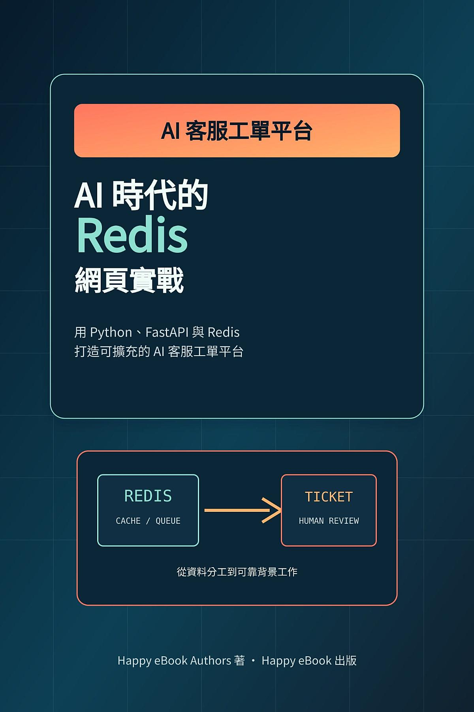

用 Python、FastAPI 與 Redis 打造 AI 客服工單平台

AI 時代的 Redis 網頁實戰: 用 Python、FastAPI 與 Redis 打造可擴充的 AI 客服工單平台
以 Python、FastAPI 與 Redis 為基礎，實作可擴充的 AI 客服工單平台。本書把網頁 API、資料處理與客服工作流程放進同一個專案，讓讀者透過實作理解 Redis 在應用系統中的使用方式。